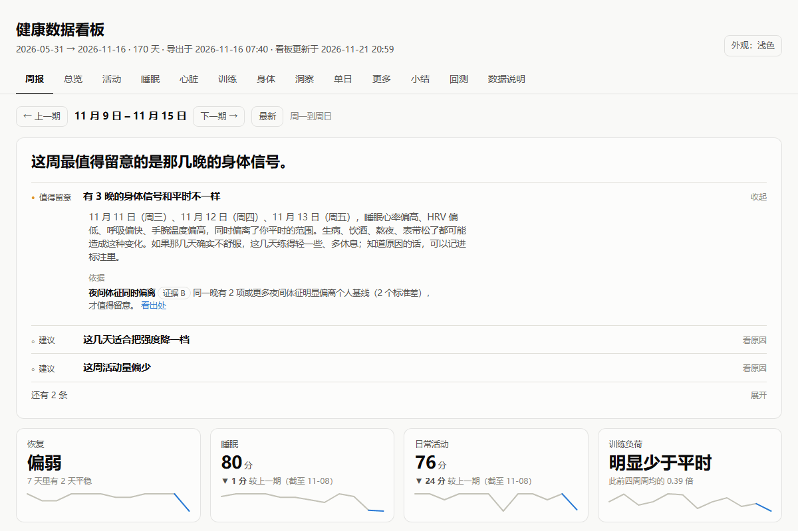
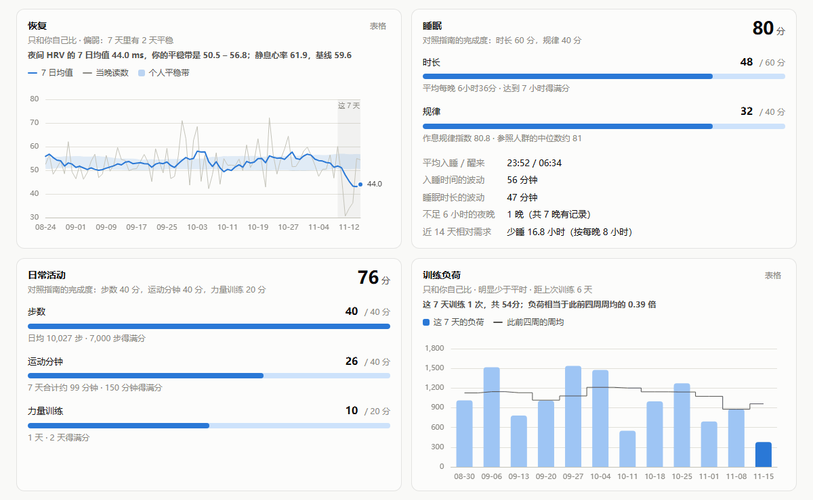
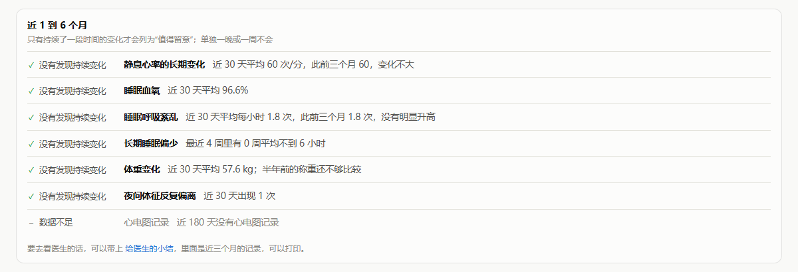
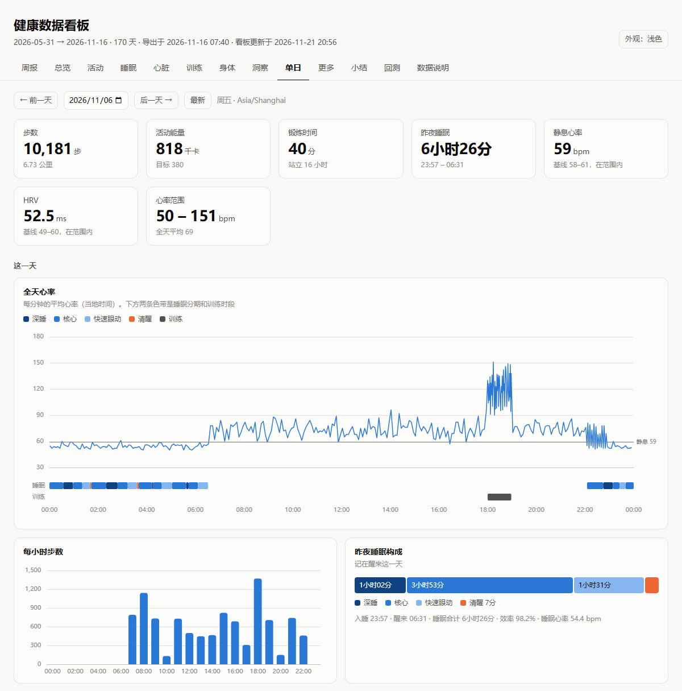
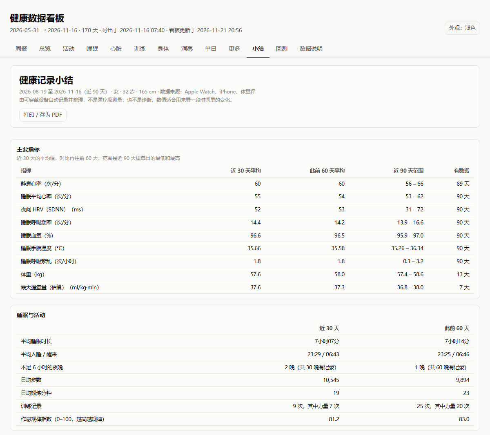
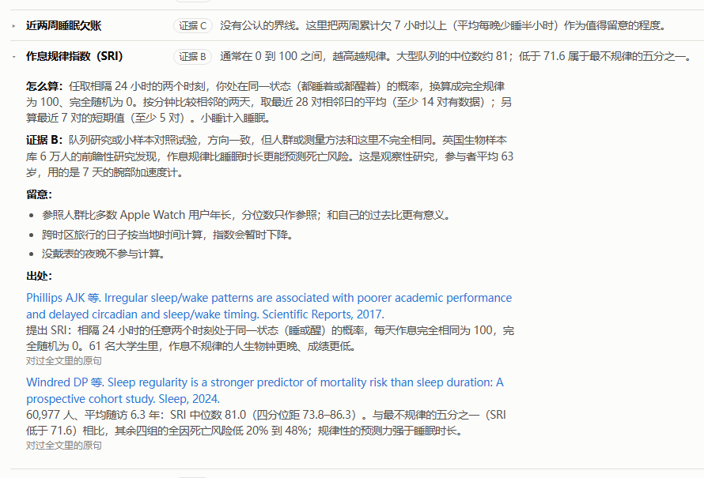

把 iPhone「健康」App 里的数据，变成一份看得懂的每周健康周报。全程在你自己的电脑上完成，数据不上传。
你需要：
收到的压缩包要先解压：Windows 上右键压缩包，选「全部解压缩」；Mac 上直接双击。不要在压缩包里面直接双击运行，那样会找不到程序文件。
解压后的文件夹里是这些东西：
| 使用指南.html | 你正在看的这份 |
| 更新数据.bat | Windows 上双击它来运行 |
| 数据集 | 文件夹，把 iPhone 导出的文件放这里 |
| dashboard | 文件夹，看板网页在里面，index.html 就是看板 |
| 标注.example.csv | 标注模板（可选，见第 7 步） |
| 其余文件 | 程序本身，不用管 |
Python 是一个免费的编程工具，本看板靠它处理数据。装一次以后就不用管了。
两种方法选一种：
这个文件一般有几十 MB 到几百 MB，用了几年 Apple Watch 的可能超过 1 GB。不用解压它。
把 导出.zip 原样拖进「数据集」文件夹就行。解压出来的文件夹放进去也认。
以后有了新的导出也放这里。程序会自动选用最新导出的那一份，旧的可以删掉。
cd 和一个空格，然后把解压出来的文件夹拖进终端窗口，按回车。python3 pipeline/update.py
处理时间一般在 10 秒到 2 分钟之间，看数据有多少。
直接双击 dashboard 文件夹里的 index.html 就行。可以把它加到浏览器书签里。
看板打开后的第一页就是「周报」。每个周日出一期，另外总有一期覆盖最近 7 天。



这里看的是持续了一段时间的变化，比如静息心率连续一个月偏高、半年里体重明显下降。出现“值得留意”时，它会写清楚记录里什么变了、常见原因有哪些，以及如果一直这样，可以带着记录去哪类门诊问问。
往下还有「这 7 天」的逐日记录（点一行能跳到那一天）和「往期」一览。
| 页面 | 看什么 |
|---|---|
| 总览 | 主要指标、关键趋势、逐月对比 |
| 活动 | 步数、三个圆环、能量消耗、距离、爬楼 |
| 睡眠 | 每晚的时长和分期、作息时间线、夜间的心率、HRV、呼吸、血氧、手腕温度 |
| 心脏 | 静息心率、HRV、每天的心率范围、心电图 |
| 训练 | 每周训练量、心率区间、每一次训练 |
| 身体 | 体重、体脂（需要体脂秤之类的设备写入健康 App） |
| 耳机 | 做成一部港片，浅色外观是白天、深色是夜里。可以切换看某一副耳机：听了多久、收听日历、一天中什么时候在听、音量和每周声音剂量（对照 WHO 的安全收听标准）、收听性格、AirPods 听力测试的听力图、每一次收听 |
| 洞察 | 最近 7 天相对你自己的基线、个人纪录、连续天数、指标之间的关系 |
| 单日 | 任意一天的每分钟心率、睡眠分期、训练时段、耳机收听、每小时步数 |
| 小结 | 近 90 天整理成一页，可以打印或存成 PDF 带给医生 |
| 回测 | 每条建议以前出现过多少次，换一个标准会怎样 |
| 数据说明 | 每个参考范围的出处和证据等级，以及全部计算方法 |
大部分图表上方可以切换时间范围（30 天到全部）和按日、周、月显示；鼠标停在图上能看到具体数值；按日显示时，点图上的某一天会跳到「单日」。右上角「外观」可以切换浅色和深色，「耳机」页会跟着换成白天或夜里的样子。



生病、喝酒、熬夜、出差的日子，数据往往和平时不一样。记下来，以后回看就知道原因；「回测」页还会告诉你这些日子身体信号有没有跟着变。
日期,标签,备注 2025-03-08,生病,感冒发烧 2025-03-21,饮酒、熬夜,朋友聚餐
日期写成 2025/3/8 也可以；一格里写多个标签时，用顿号或逗号隔开。
想看最新一周时：重新从 iPhone 导出（第 2 步）→ 放进「数据集」（第 3 步）→ 再运行一次（第 4 步）。每次导出都包含全部历史，所以「数据集」里只留最新的一份就行。建议每周或每两周更新一次。
周报里的“睡眠欠账”默认按每晚需要 8 小时计算。如果你不设闹钟时自然只睡 7 小时左右，可以把 config.example.json 复制为 config.json，用记事本把里面的 "sleep_need_hours": 8 改成 7，再运行一次。
还没装 Python，或者没装好。按第 1 步装好，再双击一次。
多半是在压缩包里面直接运行了。先解压，再从解压出来的文件夹里双击。
检查导出的文件是不是放在「数据集」文件夹里。如果放了还提示，可能是传输中断、文件不完整，从手机重新传一次。
手动双击 dashboard 文件夹里的 index.html。
还没有成功运行过一次，回到第 4 步。
时区组件需要联网下载。没联网也能继续用，只是出过国的那些天时区可能不准。联网后再运行一次就好。
睡眠、心率、HRV、血氧需要 Apple Watch，而且要戴着睡觉。个人基线需要先积累大约两个月的数据。只有 iPhone 的话，主要能看到步数、距离、爬楼和走路速度。
手机和手表会同时记步，直接相加会重复，这里去掉了重叠的部分；出过国的日子也按当地时间重新算过。「数据说明」页里有对账结果。
还没装 Python，按第 1 步装好再试。
不同设备的算法不一样。图上会用竖线标出换设备的日子，竖线两边的数值不宜直接比较。
也能识别（导出的文件叫 export.zip），只是测试得少一些。遇到问题请告诉把它发给你的人。
项目主页：github.com/zzoewlxx/IWATCH-Health-Dashboard（开源，MIT 许可证）。
有问题或建议，可以直接问把它发给你的人，或者在项目主页提 issue。